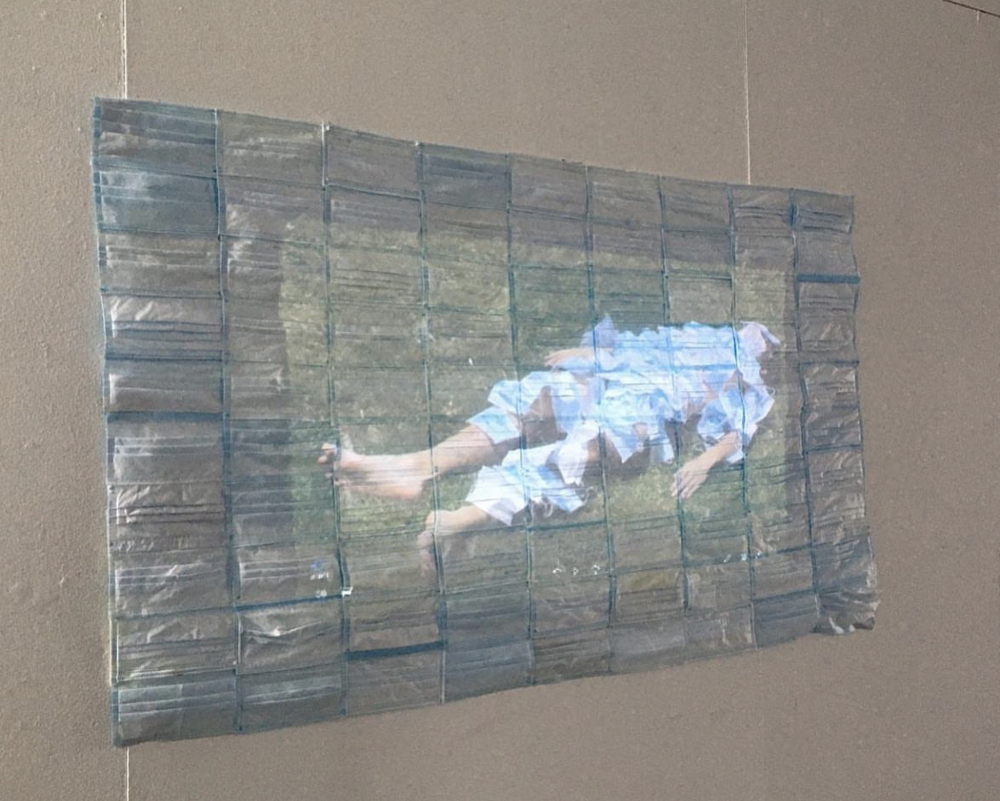
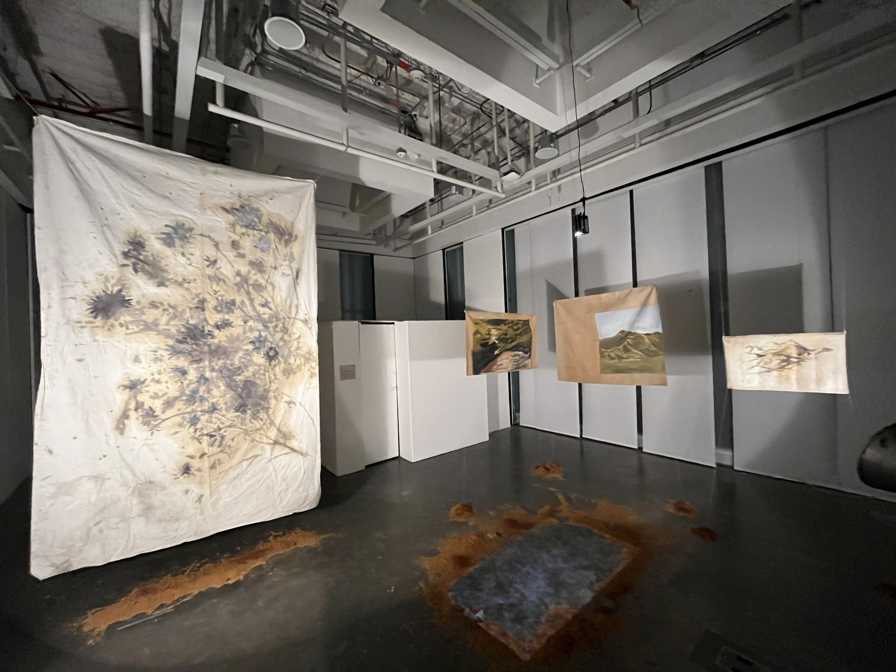

Sobre respirar en pandemia
145 tapabocas usados, desinfectados y organizados
en una plantilla en la que se proyecta una imagen · 2021

Sobre respirar en pandemia
Instalación · 2021

Evocación a un río
Evocación de un río es una investigación plástica multidisciplinar que construye una cartografía interior
en diálogo con diversos espacios geográficos. El proyecto explora cómo el entorno natural,
en especial algunos ríos del norte del país, desde los causes del Cesar hasta su encuentro
con el río Magdalena, modela la identidad y el sentir de un individúo que se reconoce a través del agua,
su movimiento y su memoria. A partir de procesos de observación sensible, se articula una relación entre
la experiencia íntima y la configuración cultural, territorial y política que atraviesa estos ríos.
La obra propone una mirada que no busca describir el paisaje sino habitarlo, permitiendo que sus ritmos,
colores, residuos, sonidos y tensiones se impriman en la materialidad de las piezas. · 2025